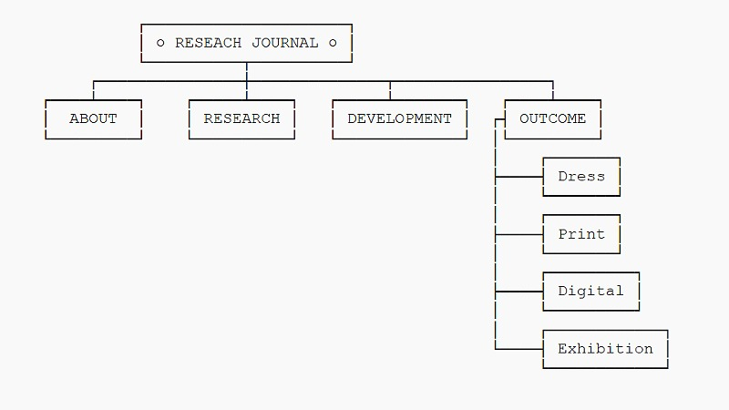
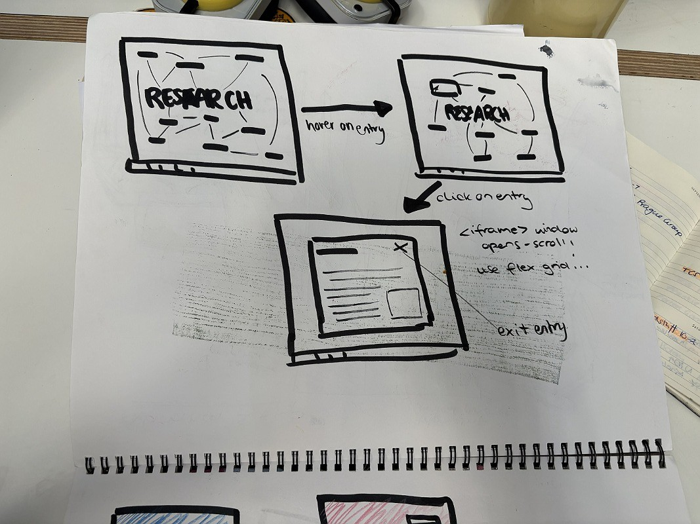
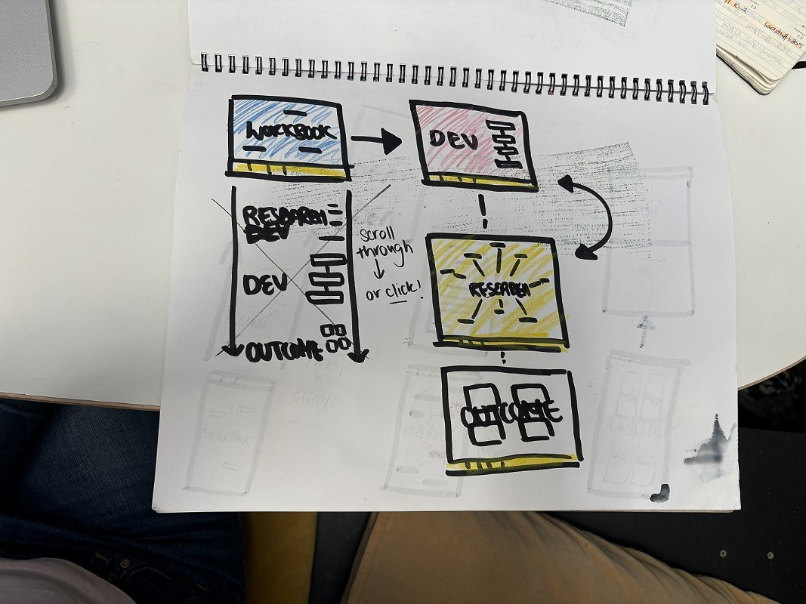
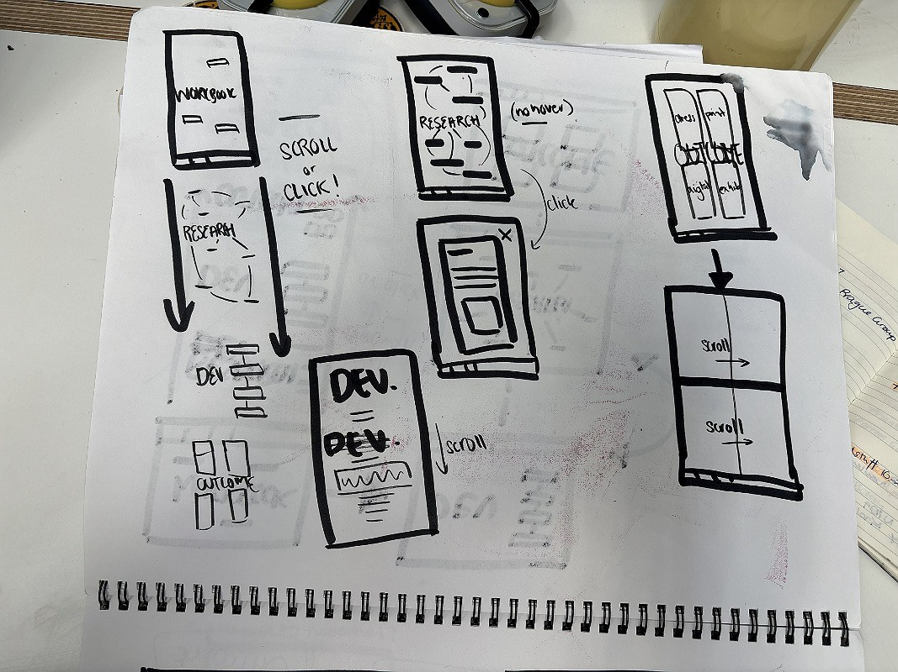
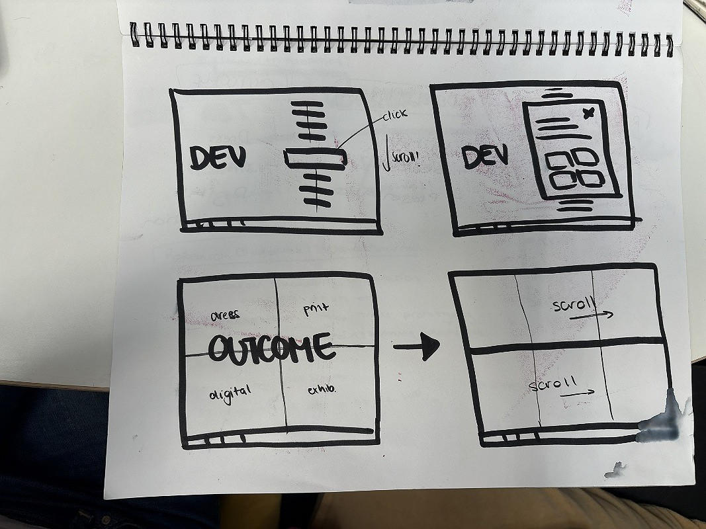
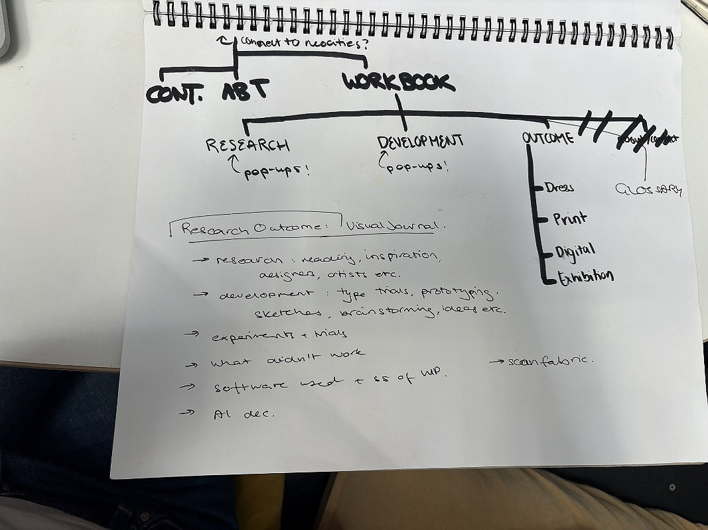

The final stage in my project was finnesing, coding and uploading all of my work to my digital portfolio. This website has, over the course of the project, morphed into the very digital element that I was looking for. In that way, I do plan to include a device with the site live in the installation of my work. Over thes semester, I have been noting down and organising my thoughts in a (huge!) excel spreadsheet. This sheet has every piece of written work that you have found on this site. I have also been cataloguing, and resizing all of my development and research images as I go through the project, so that they are easy for me to access, and won't crash/slow down a computer trying to access my website.
In the final week of the project, I revisited my wireframe page structure from the previous 'website 1' entry, and reshaped this to better fit the structure of the material I had collected. With this new structure in mind, I produced a series of sketches that gave me a rough plan for my html and css set up of the website. My process was basically then to work through and code each page manually, pivoting away from my plans at times, and tweaking the website until I reached the outcome that you are looking at right now! I am hosting my work on github, and you are welcome to visit my repository page to view the structure of my site, and even read my raw code.
You will also have noticed a custom cursor - a needle, and a trail of stitches following you as you move through the website. Plus, when you hover over a link, the cursor becomes a literal button. I just though this would be cute! The thread trail is done using p5js (a version of javascript) and the cursors are vector files I made in illustror, as is the favicon (logo) that you see at the left side of the tab at the top of your browser.
click here to visit my github repository






